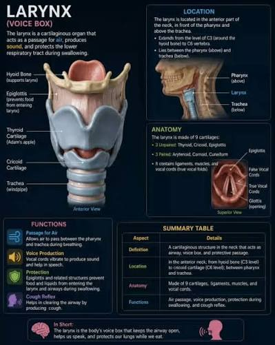
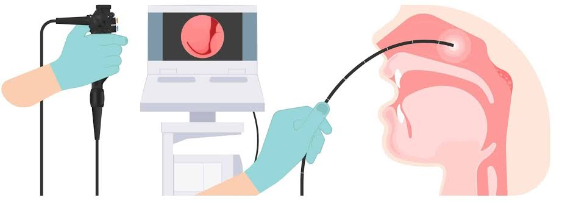

Persistent Hoarseness or Neck Swelling? Don't Wait to Get Checked
-->A scratchy voice after a cold, or a small swelling that comes and goes — most of the time, these are nothing serious. But when hoarseness lingers for weeks, or a lump in the neck doesn't go away, it's worth taking seriously. Head and neck cancers are highly treatable when caught early, but they're often mistaken early on for something minor — a lingering cough, a stubborn mouth ulcer, "just" a swollen gland — which is exactly why so many are diagnosed later than they should be.
Why "wait and see" can be risky
Head and neck cancers include cancers of the voice box (larynx), throat (pharynx), mouth, salivary glands, sinuses, and the lymph nodes in the neck. Unlike many other cancers, several of the early symptoms — a hoarse voice, a sore throat, a neck lump — are also symptoms of very common, harmless conditions. That overlap is precisely why people put off seeing a doctor. The difference that matters is duration: a viral sore throat clears up in a week or two; a cancer-related symptom tends to persist and often slowly worsens.

-->Warning signs you shouldn't ignore
See a specialist if any of the following lasts longer than 2–3 weeks:
- Hoarseness or voice change that doesn't improve
- A lump or swelling in the neck, painless or not
- A mouth ulcer or white/red patch that doesn't heal
- Difficulty or pain when swallowing
- Persistent sore throat or ear pain on one side, without an obvious cause
- Unexplained bleeding from the mouth or nose
- Numbness or weakness in the face or tongue
- Unexplained weight loss alongside any of the above
Most of these symptoms are not cancer. A hoarse voice is far more often caused by acid reflux, a viral infection, or overuse. The point isn't to worry — it's to get anything persistent checked rather than guessing.
Who's most at risk
Certain habits and exposures raise the risk of head and neck cancers significantly:
- Tobacco use in any form — smoking, khaini, gutkha, or chewing tobacco
- Betel nut and paan chewing, especially combined with tobacco — a well-established risk factor in Nepal and the wider region
- Heavy alcohol use, particularly combined with tobacco
- HPV (human papillomavirus) infection, increasingly linked to throat and tonsil cancers, including in non-smokers
- Prolonged sun exposure for lip cancers
- A prior history of head and neck cancer or radiation exposure
How head and neck cancers are diagnosed
Diagnosis usually starts with a thorough clinical examination of the mouth, throat, and neck, often combined with a simple, quick nasoendoscopy — a thin, flexible camera passed through the nose to directly view the throat and voice box. If anything suspicious is found, a biopsy is taken to confirm the diagnosis, and imaging such as a CT or MRI scan is used to assess the extent of disease and plan treatment.

-->Treatment approach
Treatment depends on the type, location, and stage of the cancer, and may involve surgery, radiotherapy, chemotherapy, or a combination of these. At CMC Cancer Institute, every head and neck cancer case is reviewed by a multidisciplinary tumour board (MDT) — surgeons, radiation oncologists, medical oncologists, and other specialists working together to design the most effective, individualised treatment plan. Wherever possible, surgical planning focuses on preserving speech, swallowing, and appearance alongside removing the cancer completely.
The bottom line
Persistent hoarseness or a neck lump is common, and most of the time it isn't cancer. But because head and neck cancers are far easier to treat successfully when caught early, any symptom that lingers beyond two to three weeks deserves a proper look rather than being brushed aside.
Noticed a persistent symptom?
Book a consultation with Dr. Bidhan Koirala for a thorough evaluation.
Book a ConsultationThis article is for general educational purposes only and is not a substitute for professional medical advice, diagnosis, or treatment. Always consult Dr. Bidhan Koirala or another qualified healthcare provider with any questions regarding a medical condition.